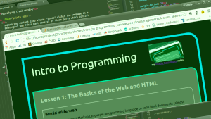

Intro to Programming

my Udacity
Nanodegree notes
Lesson 1: The Basics of the Web and HTML
world wide web
- html: HyperText Markup Language - programming language to code html documents (almost every web page)
- http: HyperText Transfer Protocol - protocol userd for communication between computer browser, internet and servers which host sites
html markup
- markup - code that determines what content (e.g. text) looks like on a web page
- element:
<opening tag>contents</closing tag>- either inline (refers to content within the line - like bold or link) or block (creates invisible box around the content - like paragraph)
key take-aways
- computers are (awesomly) stupid - they do what is programmed, all of it and nothing but it, as long as they can understand it (bold emphasis on correct syntax)
- memorising not necessary - no point in memorising details as there are too many to remember anyway (thumbs up for me and other goldfish memory people)
{kind=link}
vocabulary (copied from udacity website)
-
Tag
: An HTML tag is always contained within angled brackets. Most
tags have an opening tag and a closing tag. Some tags (called
"void" tags) do not require a closing tag (like the
<br>tag). - Element : An HTML element refers to everything within a set of opening and closing tags.
-
Attribute
: This is a property of an HTML element. For example, to set the
href attribute of an anchor tag to the Udacity URL, you would
write
<a href="www.udacity.com">
Lesson 2: Creating a Structured Document with HTML
structure of a document
- html is used for classification of webpage structure through its syntax, rules and basic element - tag
- dom: Document Object Model - structure tree of a document organised by elements
- css - language to define a style and thus change how elements look on the page
- good explanation in the following video
boxifying (real word)
- separating content into visual "boxes" within the webpage in a meaningful way (this part consist of these parts which consist of...)
-
boxes are then the base for structuring the code into parts and
subparts (with use of
<div>, <p>, <span>and other tags) - best done from biggest to smallest "boxes" (good hint is to scatch it out by pencil on a printout at the beginning)
class attributes
- serve to "mark" elements (like labels on boxes)
-
attached to elements within opening tags:
<tag class:"class attribute name"> -
enable mass application of style changes to all elements within
chosen class
- extremely important in order to avoid repetition within code and thus increase efficiency of code (positive effect on speed, as well as costs and time related to project)
Lesson 3 - Adding CSS Style to HTML Structure
css: Cascading Style Sheets
adding style
- with css we can define style in a separate stylesheet file(s)
- it can also be done within our html document or even within a line, though it should be avoided
-
to add css style to html file through stylesheet, head of the
file has to include link to css file
<link rel="stylesheet" type="text/css" href="name of css file">
selector

- element to which defined style will be applied (more info)
- application: we apply defined value (e.g. blue) to defined attribute (e.g. color) of defined selector (e.g. paragraph)
- selectors need to make logical sense to the structure of the document to ensure code efficiency (avoiding repetition)
- example types of selectors:
-
tag e.g. paragraph:
p {attribute:value;} -
class:
.class_name {attribute:value} -
attribute:
tag[attribute="value"] {attribute: value;}(more info) - for easier orientation, each attribute/value pair is on separate indented line
semantic tagging
- we should use tags that express the meaning of their content, for example:
-
if a text is a heading to what comes after it, we should tag it
h{1..6}rather than just increase its size, make it bold and give it borders/margins -
if something is just part of a normal paragraph and we want to
make it stand out by bigger size, bold font and borders but
it is not a logical heading to what comes after it, we
should do the style changes through e.g. class, but we should
not use
htag just because it comes with the style changes we want
box sizing & positioning
- one of the most complex concepts in css
-
all html elements are boxes and each box has 4 components
- margin, border, padding, content
- size of each of these can be either set as number of pixels (requires often manual readjustment), a percentage of screen size
-
most prefarable solution to box sizing (way to automize setting
those 4 elements) is to set
box-sizing: border-box
-
boxes are positioned below each other by default, unless
following rule is added to the parent
display: flex; - good summary video can be found here
code-test-refine cycle (from nothing to web page)
- a good start is with printout, where one can scatch out the boxes, define some future semantic tags, list key style 'notes' (from biggest to smallest)
- look for natural boxes
- look for repeated styles and semantic elements
- write your html
- apply styles (from biggest to smallest)
- fix things
- keep repeating 3..5 untill the product setisfies design requirements
- for testing 'on the go' and fine tuning, one can easily make changes through dev tools and see the effect immediately, and once satisfied, change the code in sublime